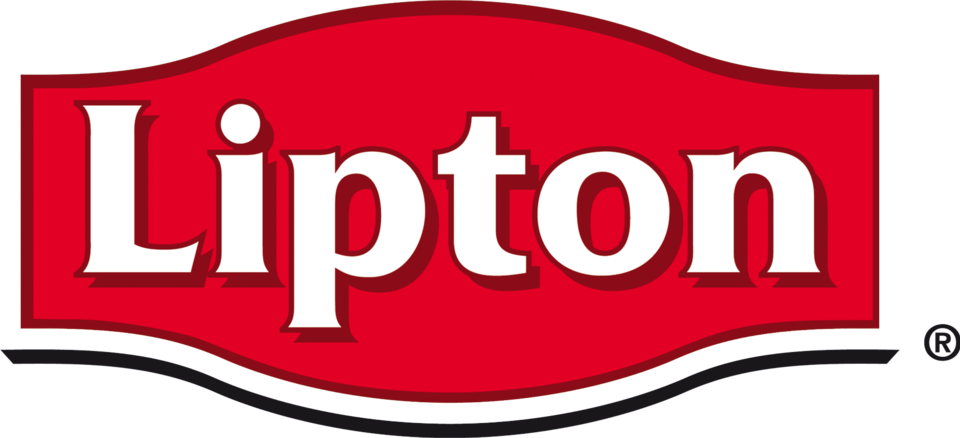

홈 > 브랜드 매거진 > 립톤
립톤
립톤(Lipton)은 토머스 립톤이 창시한 영국 기원의 글로벌 차 브랜드이다.
산업 분야 식음료 · 공개 등급 자료 기반 · 브랜드 평가 4.3 ★


한눈에 보는 브랜드
립톤(Lipton)은 1848년 영국 글래스고 고발스에서 태어난 토머스 립톤(Thomas Lipton)이 1890년 실론(현 스리랑카)의 차밭을 직접 매입해 출범시킨 홍차 브랜드다. '정원에서 찻잔까지'라는 구호로 중간 유통 단계를 걷어내고 양질의 차를 대중 가격에 공급했다.
노란 옐로 라벨로 상징되는 이 브랜드는 오랫동안 유니레버(Unilever) 산하에 있었으나, 2022년 차 사업이 분리 매각되며 현재는 립톤 티스 앤 인퓨전스가 운영하는, 150개국에서 팔리는 세계적 홍차 이름이 되었다.
브랜드 관점
립톤의 본질은 '대중 홍차의 대명사'다. 트와이닝스(Twinings)가 고급 블렌딩과 프리미엄 가격으로 전문성을 내세우는 반면, 립톤은 합리적 가격과 폭넓은 유통으로 물량 기준 약 44% 점유율을 쥔 일상 차 시장의 리더로 차별화한다.
주목할 변곡점은 소유 구조다. 유니레버는 2021년 11월 립톤을 포함한 글로벌 차 사업(에카테라, Ekaterra)을 사모펀드 CVC에 약 45억 유로에 넘기기로 했고 2022년 7월 매각을 마무리했다.
이는 거대 소비재 기업의 비핵심 카테고리 정리인 동시에, 침체된 전통 홍차를 차 전문 운영사가 다시 키우는 실험이라는 이중 함의를 띤다. 한국에서는 잎차보다 분말형 아이스티 이미지가 더 강해, 본가의 정통 홍차와는 다소 결이 다른 인지를 형성한 점도 특징이다.
시작과 성장
창업자 토머스 립톤은 1848년 글래스고의 노동자 동네에서 태어나 미국에서 식료품 유통을 익힌 뒤 1871년 고향에 첫 식료품점을 열었다. 1880년 20개, 1890년에는 300개로 점포를 늘리며 1888년 차 무역에 본격 진입했고, 1890년 실론(현 스리랑카)의 차밭을 직접 사들였다.
당시 차는 여러 중간 도매상을 거치며 비싼 사치품이었는데, 그는 재배·포장·선적을 한 손에 묶어 중간 단계를 제거했다. '정원에서 찻잔까지'라는 구호 그대로 노동자도 살 수 있는 가격에 파운드 단위로 포장해 공급하며 홍차를 대중화했다.
이 사업은 20세기 들어 유니레버 체제로 편입돼 글로벌 브랜드로 성장했고, 2022년 차 부문이 유니레버에서 분리되며 다시 독립 운영사의 깃발 아래 놓이게 되었다.
브랜드 아이덴티티
립톤의 가치관은 '좋은 차의 민주화'로 요약된다. 누구나 일상에서 부담 없이 즐기는 차를 지향한다.
시각적 상징은 1890년부터 이어진 노란 바탕에 붉은 방패형 로고로, 노랑은 햇살과 온기를, 빨강은 활력과 즐거움을 뜻한다. 2025년 리뉴얼에서는 붉은 배너를 더 매끈하게 다듬고 창립 연도를 더하며 처음으로 대문자 표기를 도입해 전통과 현대를 잇고자 했다.
타깃은 가성비와 편의를 중시하는 폭넓은 일반 소비자이며, 보이스는 따뜻하고 친근하며 격식 없이 활기찬 톤을 유지한다.
제품과 서비스
대표 제품은 옐로 라벨 홍차로 잎차와 티백 형태가 함께 있다. 여기에 분말·액상 아이스티, 다양한 허브·과일 인퓨전, 녹차 라인을 갖춰 일상 음용 전반을 아우른다.
250g·500g·900g 등 가정용 대용량부터 낱개 티백까지 가격대가 넓고, 대형마트·온라인몰·편의점 등 대중 채널을 통해 합리적 가격으로 폭넓게 유통된다.
사람들
창업자: 토머스 립톤(Thomas Lipton)이 1890년 차 브랜드로 전개했다. 소유: CVC 캐피털 파트너스가 지배하는 립톤 티스 앤드 인퓨전스(Lipton Teas and Infusions, 2022년 유니레버에서 분리).
현재 상태
현재 립톤은 사모펀드 CVC가 2022년 인수한 립톤 티스 앤 인퓨전스(옛 에카테라) 산하의 핵심 브랜드다. 본사는 네덜란드 로테르담에 있으며, 이 회사는 세계 최대 규모의 차 전문 기업으로 PG 팁스, 푸카 등도 함께 보유한다.
그룹 전체 매출은 2024년 기준 약 50억 달러 수준으로 알려져 있으며, 립톤 브랜드 단위의 세부 실적은 공식적으로 미공개다.
타임라인
BI/CI 변천사
함께 읽을 브랜드
네슬레(Nestlé)는 스위스 브베에 본사를 둔 세계 최대 규모의 식음료 다국적 기업이다.
Di
Disrepute
식음료 · 편집 검수DisreputeDisrepute는 2017년에 기록된 Cafes, Bars & Restaurants 계열의 브랜드 아이덴티티 사례입니다. Two Times Elliott가 아이덴티...
Dr
Drumroll
식음료 · 편집 검수DrumrollDrumroll는 2024년에 기록된 Food Brands 계열의 브랜드 아이덴티티 사례입니다. Gander가 아이덴티티 작업의 디자이너로 기록되어 있습니다. 공개...
 식음료 · 자료 기반오뚜기
식음료 · 자료 기반오뚜기오뚜기(Ottogi)는 1969년 설립된 한국의 종합 식품 기업으로, 국산 카레와 다양한 가공식품으로 알려져 있다.
 식음료 · 자료 기반하이네켄
식음료 · 자료 기반하이네켄하이네켄(Heineken)은 1864년 네덜란드 암스테르담에서 창립된 하이네켄 N.V.의 플래그십 페일 라거 맥주 브랜드이다.
 식음료 · 자료 기반메가MGC커피
식음료 · 자료 기반메가MGC커피메가MGC커피(Mega MGC Coffee)는 2015년 시작된 한국의 저가 대용량 커피 프랜차이즈다.
 식음료 · 자료 기반이디야커피
식음료 · 자료 기반이디야커피이디야커피(Ediya Coffee)는 2001년 시작된 한국의 저가 커피 프랜차이즈로, 합리적 가격과 다점포 전략으로 알려져 있다.
Bu
Burger Service
식음료 · 편집 검수Burger ServiceBurger Service는 2023년에 기록된 Burger Branding 계열의 브랜드 아이덴티티 사례입니다. Studio Najbrt가 아이덴티티 작업의 디자이...